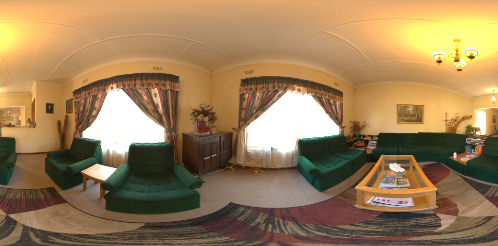
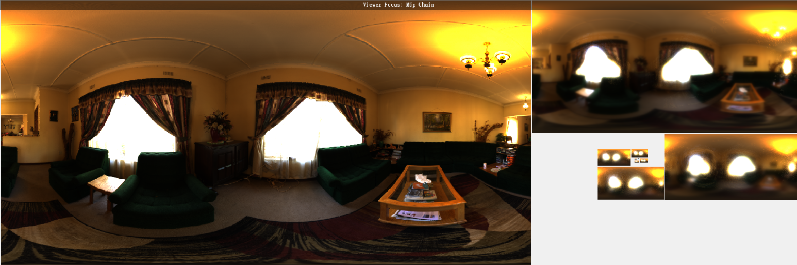

Reflectance equation
这里采用的反射模型如下:
$$L_o(p,\omega_o) = \int_\Omega (k_d \frac{c}{\pi} + k_s \frac{DFG}{4(\omega_o \cdot n)(\omega_i \cdot n)})L_i(p,\omega_i)(n \cdot \omega_i) d\omega_i$$
$$\Rightarrow L_o(p,\omega_i) = \int_\Omega k_d \frac{c}{\pi}L_i(p,\omega_i)n\cdot \omega_i d\omega_i + \int_\Omega k_s \frac{DFG}{4(\omega_i \cdot n)(\omega_o \cdot n)}L_i(p,\omega_i)(n \cdot \omega_i) d\omega_i$$
Diffuse Irradiance
接下来先看diffuse项:
$$L_o = \int_\Omega k_d\frac{c}{\pi}L_i(p,\omega_i) (n \cdot \omega_i ) d\omega_i$$
$$\Rightarrow L_o = k_d\frac{c}{\pi}\int_\Omega L_i(p,\omega_i) (n\cdot \omega_i) d\omega_i$$
$$\Rightarrow L_o = k_d \frac{c}{\pi}\int_{\phi = 0}^{2\pi} \int_{\theta = 0}^{\frac{\pi}{2}}L_i(p,\phi_i,\theta_i)\cos(\theta)\sin(\theta)d\phi d\theta \tag{1}$$
蒙特卡洛方法
$$\because E[\frac{f(x)}{p(x)}] = \int f(x)dx$$
设$\frac{f(x_1)}{p(x_1)},\frac{f(x_2)}{p(x_2)},…,\frac{f(x_n)}{p(x_n)}$为独立同分布的随机变量,因此构造估计量如下:
$$\sigma = \frac{1}{N}\sum_{i=0}^{N} \frac{f(x_i)}{p(x_i)}$$
根据大数定律得知,样本均值将会收敛于期望值,因此当N增大,估计量将会逐渐逼近于期望$\int f(x)dx$
接下来证明下无偏性:
$$E[\sigma] = E[\frac{1}{N}\sum_{i=0}^{N} \frac{f(x_i)}{p(x_i)}]$$
$$\Rightarrow E[\sigma] = \frac{1}{N}E[\sum_{i = 0}^{N}\frac{f(x_i)}{p(x_i)}]$$
$$\Rightarrow E[\sigma] = \frac{1}{N}\sum_{i = 0}^{N}E[\frac{f(x_i)}{p(x_i)}]$$
$$\Rightarrow E[\sigma] = \frac{1}{N}NE[\frac{f(x)}{p(x)}] = \int f(x)dx$$
接下来使用蒙特卡洛方法来分解方程(1),使用均匀分布$p(\phi) = \frac{1}{2\pi},p(\theta) = \frac{1}{(\frac{\pi}{2})} = \frac{2}{\pi}$
构造估计量如下:
$$L_o = k_d \frac{c}{\pi}\frac{1}{n_1}\frac{1}{n_2}\sum_{i = 1}^{n_1}\sum_{j = 1}^{n_2}\frac{L_i(p,\phi_i,\theta_j)cos(\theta_j)sin(\theta_j)}{p(\phi)\cdot p(\theta)}d\phi d\theta$$
$$\Rightarrow L_o = k_d\frac{c}{\pi}\frac{1}{n_1 n_2} 2\pi \frac{\pi}{2}\sum_{i = 1}^{n_1}\sum_{j = 1}^{n_2}L_i(p,\phi_i,\theta_j)cos(\theta_j)\sin(\theta_j)d\phi d\theta$$
$$\Rightarrow L_o = k_d c\frac{\pi}{n_1 n_2}\sum_{i = 1}^{n_1}\sum_{j = 1}^{n_2}L_i(p,\phi_i,\theta_j)cos(\theta_j)\sin(\theta_j)d\phi d\theta$$
实现就显得很简单了,IBL中贴图的每个texel都是一个光源,即提供了$L_i$的数据,代码如下:1
2
3
4
5
6
7
8
9
10
11
12
13
14
15
16
17
18
19
20
21
22
23
24
25
26
27
28
29
30
31
32
33
34
35
36
37
38int phiSampleCount = 100;
int thetaSampleCount = 100;
float phiDelta = SMath::TWO_PI / phiSampleCount;
float thetaDelta = SMath::PI_DIV_2 / thetaSampleCount;
for (int i = 0; i < width; i++)
{
for (int j = 0; j < height; j++)
{
float phi = SMath::TWO_PI * i / (float)(width -1);
float theta = SMath::PI * j / (float)(height - 1);
SVector3f up = SVector3f(SMath::SinRad(theta) * SMath::CosRad(phi), SMath::CosRad(theta), SMath::SinRad(theta) * SMath::SinRad(phi));
SVector3f front = up.z < 0.999f ? SVector3f(0.0f, 0.0f, 1.0f) : SVector3f(0.0f, -1.0f, 0.0f);
SVector3f right = SVector3f::Normalize(SVector3f::cross(up, front));
front = SVector3f::Normalize(SVector3f::cross(right, up));
SVector3f irradiance = SVector3f::Zero();
for (float localPhi = 0.0f; localPhi < SMath::TWO_PI; localPhi += phiDelta)
{
for (float localTheta = 0.0f; localTheta < SMath::PI_DIV_2; localTheta += thetaDelta)
{
SVector3f localDir = SVector3f(SMath::SinRad(localTheta) * SMath::CosRad(localPhi), SMath::CosRad(localTheta), SMath::SinRad(localTheta) * SMath::SinRad(localPhi));
SVector3f dir = right * localDir.x + up * localDir.y + front * localDir.z;
dir.Normalize();
SVector2f uv = CartesianToSpherical(dir);
irradiance += image.GetPixel(int(uv.x * (width - 1)), int(uv.y * (height - 1))).xyz() * SMath::CosRad(localTheta) * SMath::SinRad(localTheta);
}
}
irradiance = SMath::PI * irradiance / (float)(phiSampleCount * thetaSampleCount);
sIrradianceMap->SetPixel(i, j, irradiance);
}
}
以如下环境贴图为例:

Irradiance Map如下:
Specular IBL
对Specular项应用蒙特卡洛积分:
$$\int_\Omega L_i(p,\omega_i)f(p,\omega_i,\omega_o)(n \cdot \omega_i) d\omega_i \approx \frac{1}{N}\sum_{k = 1}^N\frac{L_i(p,\omega_{i})f(p,\omega_{i},\omega_{o})(n\cdot \omega_{i})}{pdf}$$
UE4中对其进行了一个近似,划分成了两个累加的乘积:
$$\frac{1}{N}\sum_{k = 1}^N\frac{L_i(p,\omega_{i})f(p,\omega_{i},\omega_{o})(n\cdot \omega_{i})}{pdf} \approx \Big(\frac{1}{N}\sum_{k = 1}^N L_i(p,\omega_{i}\Big )\Big (\frac{1}{N}\sum_{k = 1}^{N}\frac{f(p,\omega_{i}, \omega_{o})(n \cdot \omega_{i})}{pdf}\Big )$$
Pre-Filtered Environment Map
对于第一个累加,常用的方案是使用GGX的重要性采样对环境贴图进行卷积计算
我们可以针对不同的粗糙度值进行预计算,并将结果保存在mipmap中
由于使用了微表面模型,分布的形状将会受到视角的影响,因此,这里假定为各向同性,即$N = V = R$
但这也意味着我们从与法线垂直的方向去看表面,无法得到强烈的反射,针对这一点,使用$\cos(\omega_i)$进行加权解决
实现如下:1
2
3
4
5
6
7
8
9
10
11
12
13
14
15
16
17
18
19
20
21
22
23
24
25
26
27
28
29
30
31
32
33
34
35
36
37
38
39
40
41
42
43
44
45
46for (int miplevel = 0; miplevel < mipNum; miplevel++)
{
float roughness = (float)miplevel / (float)(mipNum - 1);
int cur_width = width >> miplevel;
int cur_height = height >> miplevel;
for (int i = 0; i < cur_width; i++)
{
for (int j = 0; j < cur_height; j++)
{
float phi = (float)i / (float)(cur_width - 1) * SMath::TWO_PI;
float theta = (float)j / (float)(cur_height - 1) * SMath::PI;
SVector3f N(SMath::SinRad(theta) * SMath::CosRad(phi), SMath::CosRad(theta), SMath::SinRad(theta) * SMath::SinRad(phi));
N.Normalize();
SVector3f V = N;
SVector3f prefilterdColor = SVector3f::Zero();
float sumWeight = 0.0f;
// 使用GGX Importance Sampling选择采样点
for (unsigned int isample = 0; isample < sampleNum; isample++)
{
SVector2f Xi = Hammersley(isample, sampleNum);
SVector3f H = ImportanceSampleGGX(Xi, roughness, N);
SVector3f L = SVector3f::Normalize(H * 2.0f * dot(V, H) - V);
float NdotL = dot(N, L);
if (NdotL > 0.0f)
{
SVector2f sphericalCoordinate = CartesianToSpherical(L);
SVector2f uv(sphericalCoordinate.x * (width - 1), sphericalCoordinate.y * (height - 1));
prefilterdColor += image.GetPixel((int)uv.x, (int)uv.y).xyz() * NdotL;
sumWeight += NdotL;
}
}
prefilterdColor /= sumWeight;
sPrefilterMap->SetPixel(i, j, prefilterdColor, miplevel);
}
}
}
计算结果如下:

Precompute BRDF LUT
接着分解第二个累加项:
$$\frac{1}{N}\sum_{k = 1}^{N}\frac{f(p,\omega_{i}, \omega_{o})(n \cdot \omega_{i})}{pdf} = \frac{1}{N}\sum_{k = 1}^{N}\frac{f(p,\omega_{i}, \omega_{o})(n \cdot \omega_{i}) \times F(\omega_{o},\omega_h)}{pdf \times F(\omega_{o},\omega_h)}$$
$$\because F(\omega_o, \omega_h) = F_0 + (1 - F_0)(1 - \omega_o \cdot \omega_h)^5$$
$$\Rightarrow \frac{1}{N}\sum_{k = 1}^{N}\frac{f(p,\omega_{i}, \omega_{o})(n \cdot \omega_{i}) \times (F_0 (1 - (1 - \omega_{o} \cdot \omega_h)^5) + (1 - \omega_{o} \cdot \omega_h)^5)}{pdf \times F(\omega_{o},\omega_h)}$$
$$\Rightarrow \frac{F_0}{N}\sum_{k = 1}^{N} \frac{f(p,\omega_{i}, \omega_{o})(n\cdot \omega_{i}) \times (1 - (1 - \omega_{o} \cdot \omega_h)^5)}{pdf \times F(\omega_{o}, \omega_h)} + \\
\frac{1}{N}\sum_{k = 1}^{N}\frac{f(p,\omega_{i},\omega_{o}) (n\cdot \omega_{i}) \times (1 - \omega_{o} \cdot \omega_h)^5}{pdf \times F(\omega_{o},\omega_h)} \tag{2}$$
由于我们使用的是微表面模型:
$$f(p,\omega_i,\omega_o) = \frac{D(\omega_h)F(\omega_o,\omega_h)G(\omega_i,\omega_o)}{4(\omega_i \cdot n)(\omega_o \cdot n)}$$
GGX重要性采样的PDF为:
$$pdf = \frac{D(\omega_h)(\omega_h \cdot n)}{4 (\omega_o \cdot \omega_h)}$$
因此:
$$\frac{f(p,\omega_i,\omega_o)(\omega_i \cdot n)}{pdf \times F(\omega_o,\omega_h)} = \frac{D(\omega_h)F(\omega_o,\omega_h)G(\omega_i,\omega_o)(\omega_i \cdot n)}{4(\omega_i \cdot n)(\omega_o \cdot n)} \times \frac{4 (\omega_o \cdot \omega_h)}{D(\omega_h)(\omega_h \cdot n) F(\omega_o,\omega_h)}$$
$$\Rightarrow = \frac{G(\omega_i,\omega_o)(\omega_o \cdot \omega_h)}{(\omega_o \cdot n)(\omega_h \cdot n)}$$
代入(2)式可得:
$$\frac{F_0}{N}\sum_{k = 1}^N \frac{G(\omega_i,\omega_o)(\omega_o \cdot \omega_h)(1 - (1 - \omega_o \cdot n)^5)}{(\omega_o \cdot n)(\omega_h \cdot n)} + \frac{1}{N}\sum_{k = 1}{N}\frac{G(\omega_i,\omega_o)(\omega_o \cdot \omega_h) (1 - \omega_o \cdot h)^5}{(\omega_o \cdot n)(\omega_h \cdot n)}$$
因此可以以roughness与$(\omega_o \cdot n)$作为变量来预计算上述方程,以roughness,$(\omega_o \cdot n)$为行列得到预计算的BRDF查找表
代码如下:1
2
3
4
5
6
7
8
9
10
11
12
13
14
15
16
17
18
19
20
21
22
23
24
25
26
27
28
29
30
31
32
33
34
35
36
37
38
39
40
41
42
43
44
45
46SVector2f IntegrateBRDF(float roughness, float NdotV)
{
SVector2f V;
V.x = sqrt(1.0f - NdotV * NdotV);
V.y = NdotV;
V.z = 0.0f;
float A = 0, B = 0;
SVector3f N = Svector3f(0.0f,1.0f,0.0f);
unsigned int numSamples = 1024;
for(unsigned int i = 0; i < numSamples; i++)
{
SVector2f Xi = Hammersley(i, numSamples);
SVector3f H = ImportanceSampleGGX(Xi, roughness, N);
SVector3f L = SVector3f::Normalize(2 * dot(V,H) * H - V);
float NdotL = SMath::clamp(L.y, 0.0f, 1.0f);
float NdotH = SMath::clamp(H.y, 0.0f, 1.0f);
float VdotH = SMath::clamp(dot(V,H), 0.0f, 1.0f);
if(NdotL > 0.0f)
{
float G = G_Smith(roughness, NdotV, NdotL);
float G_Vis = G * VdotH / (NdotH * NdotV);
float Fc = pow(1 - VdotH, 5);
A += (1 - Fc) * G_Vis;
B += Fc * G_Vis;
}
}
return SVector2f(A / numSamples, B / numSamples);
}
for(int j = 0; j < height; j++)
{
for(int i = 0; i < width; i++)
{
float NdotV = i / (float)(width - 1);
float roughness = j / (float)(height - 1);
SVector2f brdf = IntegrateBRDF(roughness, NdotV);
sBRDFLutMap->SetPixel(i, height - 1 -j , brdf.x, brdf.y, 0.0f, 1.0f);
}
}
预计算结果如下:
最终Specular IBL计算如下:1
2
3
4
5
6
7
8
9float3 irradiance = IrradianceMap.Sample(samplerIrradiace, CartesianToSpherical(N)).rgb;
float3 diffuse = irradiance * albedo;
const float MAX_REFLECTION_LOD = 10.0;
float3 prefilteredColor = prefilterMap.SampleLevel(samplerPrefilter, CartesianToSpherical(R), roughness * MAX_REFLECTION_LOD).rgb;
float2 envBRDF = BRDFLutMap.Sample(samplerBRDFLut, float2(NdotV, roughness)).rg;
float3 specularIBL = prefilteredColor * (F * envBRDF.x + envBRDF.y);
float3 ambient = (kd * diffuse + specular) * AO;
实现代码可参考这里,效果如下: